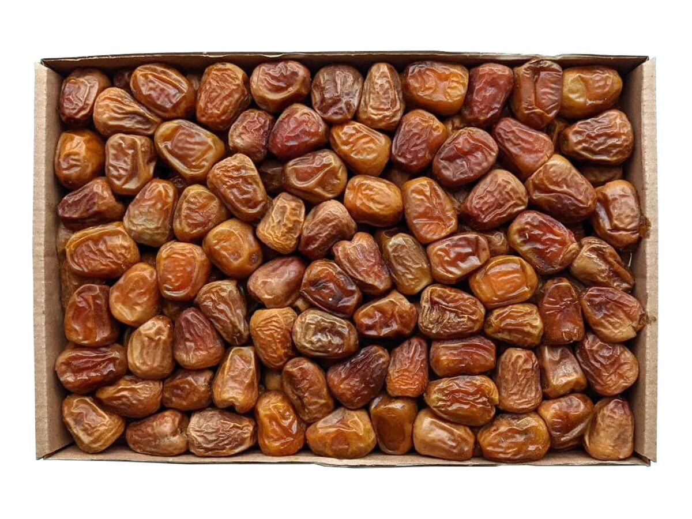

Свежий сезон · Саудовская Аравия
Финики Суккари руттаб оптом
Прямая поставка. Коробки по 3–4 кг. Для ресторанов, кафе и мечетей.

Фото товара предоставлено продавцом
Условия
Цена за коробку
Укажите нужное количество при обращении — обсудим поставку.
От 10 коробок1 200 ₽Оптовая цена
1–9 коробок1 300 ₽За коробку
Розница1 400 ₽За коробку
Поставки
Для вашего заведения
Финики для подачи гостям и закупок общин.
РестораныКафеМечети
Связаться
Нужна партия фиников?
Напишите количество коробок и удобный способ связи.
Шангараев Йосыф